2022 Advanced Higher Chemistry - Paper 2 questions
Source: Scottish Qualifications Authority (SQA) / Qualifications Scotland. This is a StemInteract HTML companion, not an official HTML edition. Selectable text is supplied alongside original page images. Use the images or original PDF for equations, powers, fractions, vector notation, tables and diagrams; text extraction cannot fully preserve mathematical layout.
Jump to a question
PDF page 1
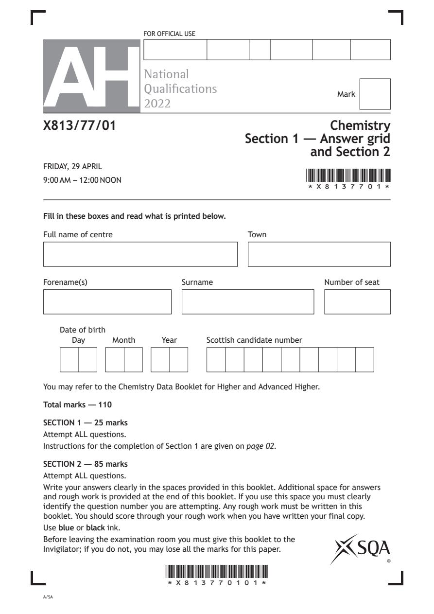
Selectable page text
FOR OFFICIAL USE
AH
National
Qualications
Mark
2022
X813/77/01 Chemistry
Section 1 — Answer grid
and Section 2
FRIDAY, 29 APRIL
9:00 AM – 12:00 NOON
*X8137701*
Fill in these boxes and read what is printed below.
Full name of centre Town
Forename(s) Surname Number of seat
Date of birth
Day Month Year Scottish candidate number
You may refer to the Chemistry Data Booklet for Higher and Advanced Higher.
Total marks — 110
SECTION 1 — 25 marks
Attempt ALL questions.
Instructions for the completion of Section 1 are given on page 02.
SECTION 2 — 85 marks
Attempt ALL questions.
Write your answers clearly in the spaces provided in this booklet. Additional space for answers
and rough work is provided at the end of this booklet. If you use this space you must clearly
identify the question number you are attempting. Any rough work must be written in this
booklet. You should score through your rough work when you have written your final copy.
Use blue or black ink.
Before leaving the examination room you must give this booklet to the
Invigilator; if you do not, you may lose all the marks for this paper.
©
*X813770101*
A/SAPDF page 2
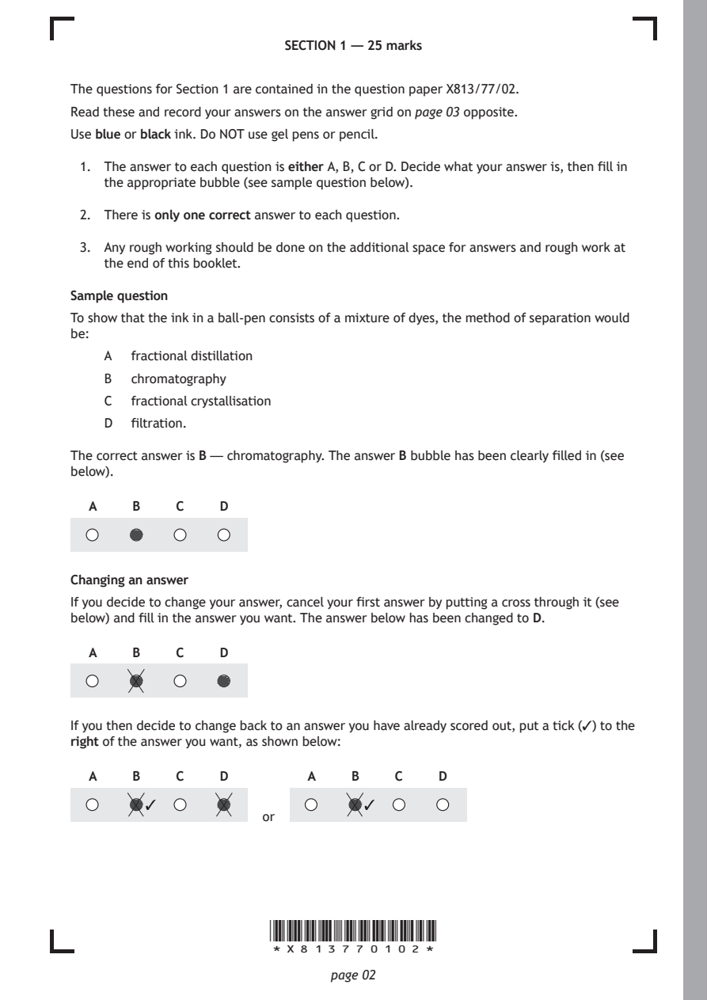
Selectable page text
SECTION 1 — 25 marks
The questions for Section 1 are contained in the question paper X813/77/02.
Read these and record your answers on the answer grid on page 03 opposite.
Use blue or black ink. Do NOT use gel pens or pencil.
1. The answer to each question is either A, B, C or D. Decide what your answer is, then fill in
the appropriate bubble (see sample question below).
2. There is only one correct answer to each question.
3. Any rough working should be done on the additional space for answers and rough work at
the end of this booklet.
Sample question
To show that the ink in a ball-pen consists of a mixture of dyes, the method of separation would
be:
A fractional distillation
B chromatography
C fractional crystallisation
D filtration.
The correct answer is B — chromatography. The answer B bubble has been clearly filled in (see
below).
A B C D
Changing an answer
If you decide to change your answer, cancel your first answer by putting a cross through it (see
below) and fill in the answer you want. The answer below has been changed to D.
A B C D
If you then decide to change back to an answer you have already scored out, put a tick (3) to the
right of the answer you want, as shown below:
A B C D A B C D
or
*X813770102*
page 02PDF page 3
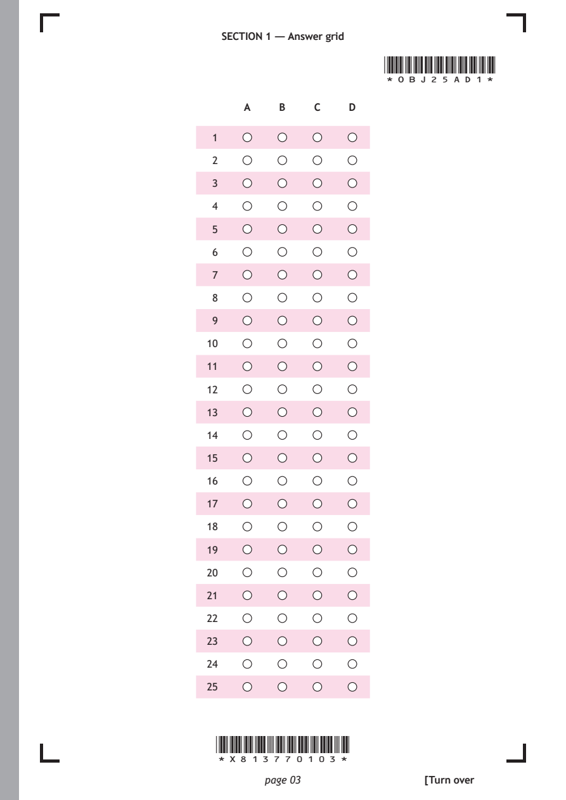
Selectable page text
SECTION 1 — Answer grid
*OBJ25AD1*
A B C D
1
2
3
4
5
6
7
8
9
10
11
12
13
14
15
16
17
18
19
20
21
22
23
24
25
*X813770103*
page 03 [Turn overPDF page 4

Selectable page text
[BLANK PAGE]
DO NOT WRITE ON THIS PAGE
*X813770104*
page 04PDF page 5
Paper 2, Question 1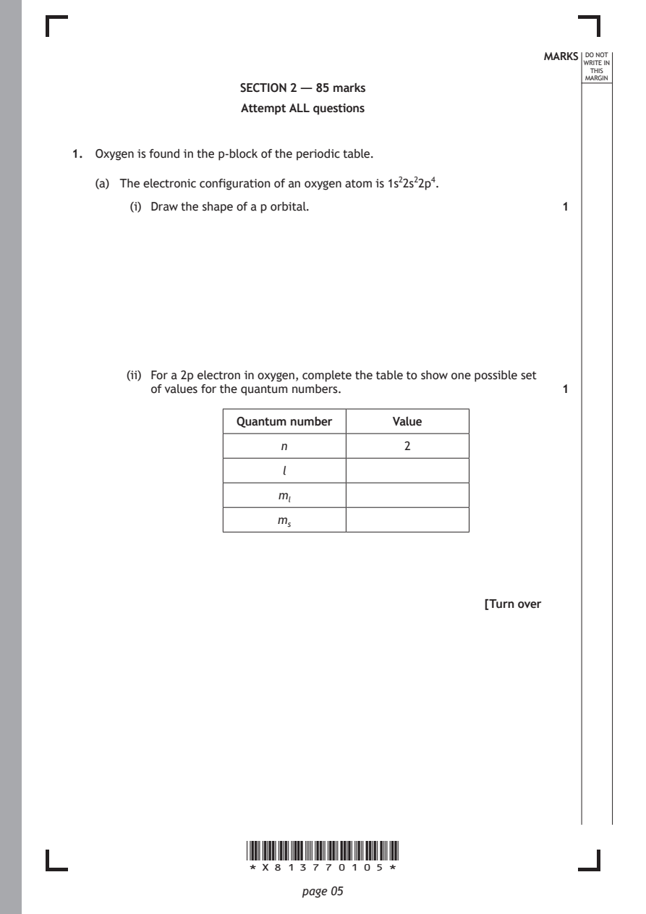
Selectable page text
MARKS _{W}^{D}_{R}^{O}_{I} _{T}^{N}OT
E IN
THIS
MARGIN
SECTION 2 — 85 marks
Attempt ALL questions
1. Oxygen is found in the p-block of the periodic table.
(a) The electronic configuration of an oxygen atom is 1s²2s²2p⁴.
(i) Draw the shape of a p orbital. 1
(ii) For a 2p electron in oxygen, complete the table to show one possible set
of values for the quantum numbers. 1
Quantum number Value
n 2
l
mₗ
mₛ
[Turn over
*X813770105*
page 05PDF page 6
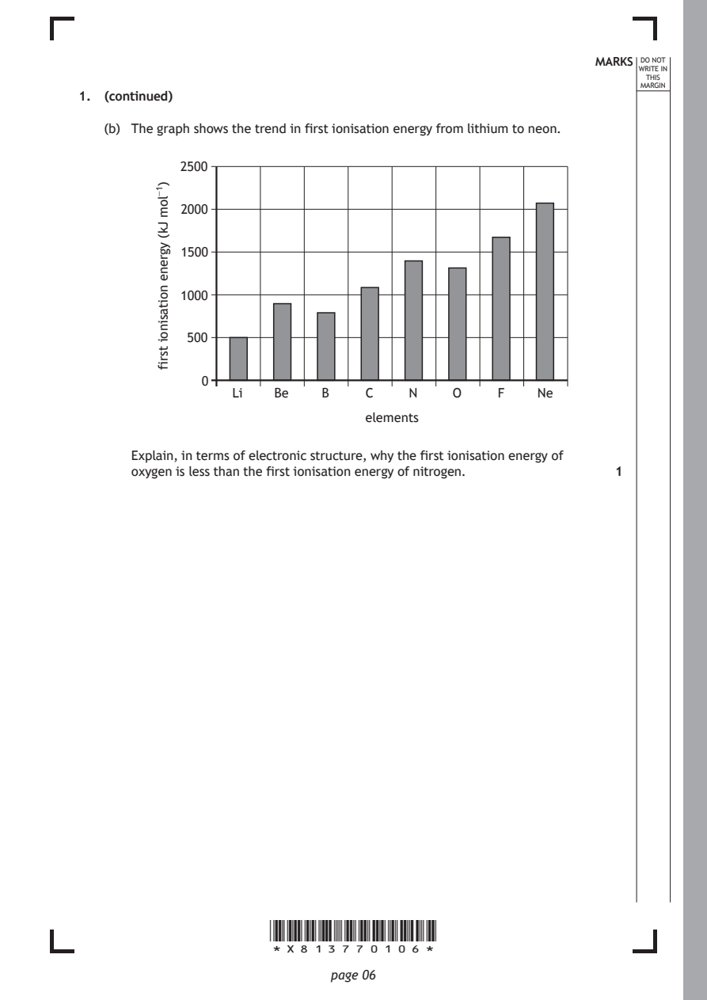
Selectable page text
MARKS _{W}^{D}_{R}^{O}_{I} _{T}^{N}OT
E IN
THIS
MARGIN
1. (continued)
(b) The graph shows the trend in first ionisation energy from lithium to neon.
*X813770106*
page 06
)1−lom
Jk(
ygrene
noitasinoi
tsrif
2500
2000
1500
1000
500
0
Li Be B C N O F Ne
elements
Explain, in terms of electronic structure, why the first ionisation energy of
oxygen is less than the first ionisation energy of nitrogen. 1PDF page 7
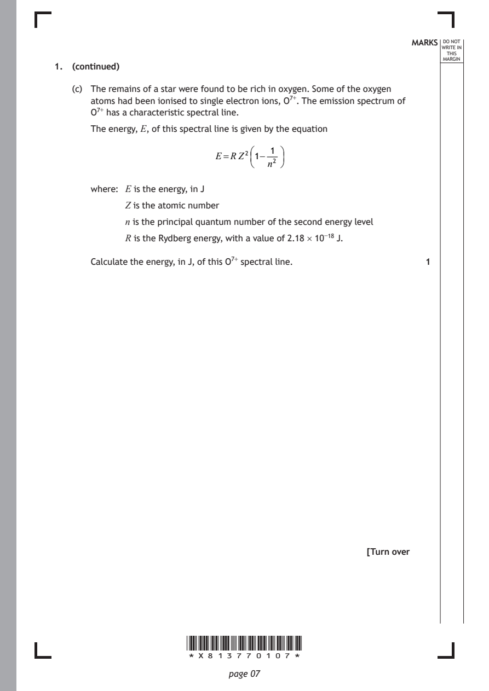
Selectable page text
MARKS _{W}^{D}_{R}^{O}_{I} _{T}^{N}OT
E IN
THIS
MARGIN
1. (continued)
(c) The remains of a star were found to be rich in oxygen. Some of the oxygen
atoms had been ionised to single electron ions, O⁷⁺. The emission spectrum of
O⁷⁺ has a characteristic spectral line.
The energy, E, of this spectral line is given by the equation
1
E=RZ²1−
n²
where: E is the energy, in J
Z is the atomic number
n is the principal quantum number of the second energy level
R is the Rydberg energy, with a value of 2.18 × 10⁻¹⁸ J.
Calculate the energy, in J, of this O⁷⁺ spectral line. 1
[Turn over
*X813770107*
page 07PDF page 8
Paper 2, Question 2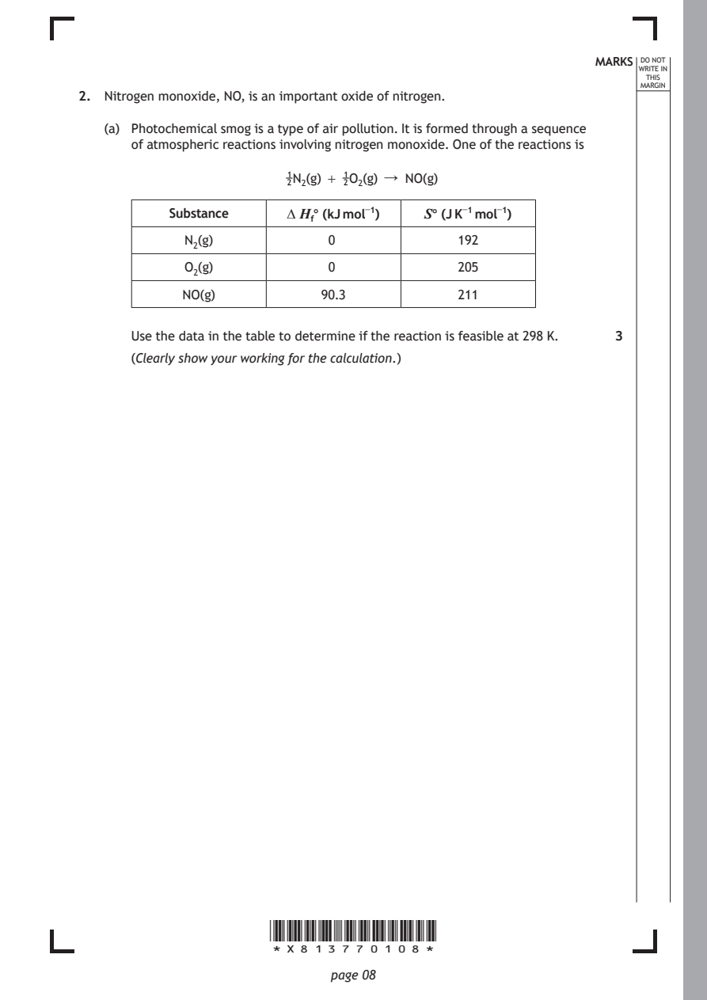
Selectable page text
MARKS _{W}^{D}_{R}^{O}_{I} _{T}^{N}OT
E IN
THIS
MARGIN
2. Nitrogen monoxide, NO, is an important oxide of nitrogen.
(a) Photochemical smog is a type of air pollution. It is formed through a sequence
of atmospheric reactions involving nitrogen monoxide. One of the reactions is
1N₂(g) + 1O₂(g) ↓ NO(g)
2 2
Substance ∆ H_{f}° (kJ mol⁻¹) S° (J K⁻¹ mol⁻¹)
N₂(g) 0 192
O₂(g) 0 205
NO(g) 90.3 211
Use the data in the table to determine if the reaction is feasible at 298 K. 3
(Clearly show your working for the calculation.)
*X813770108*
page 08PDF page 9
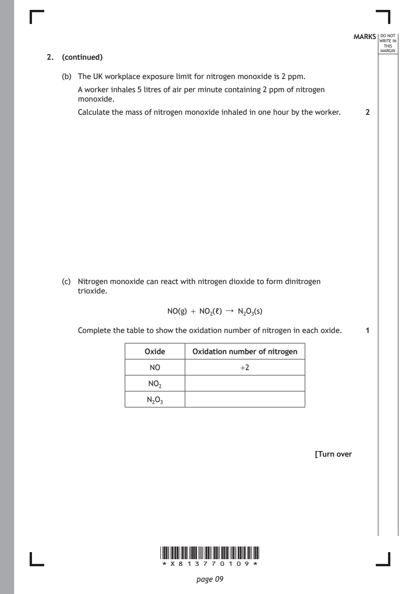
Selectable page text
MARKS _{W}^{D}_{R}^{O}_{I} _{T}^{N}OT
E IN
THIS
MARGIN
2. (continued)
(b) The UK workplace exposure limit for nitrogen monoxide is 2 ppm.
A worker inhales 5 litres of air per minute containing 2 ppm of nitrogen
monoxide.
Calculate the mass of nitrogen monoxide inhaled in one hour by the worker. 2
(c) Nitrogen monoxide can react with nitrogen dioxide to form dinitrogen
trioxide.
NO(g) + NO₂(ℓ) ↓ N₂O₃(s)
Complete the table to show the oxidation number of nitrogen in each oxide. 1
Oxide Oxidation number of nitrogen
NO +2
NO₂
N₂O₃
[Turn over
*X813770109*
page 09PDF page 10
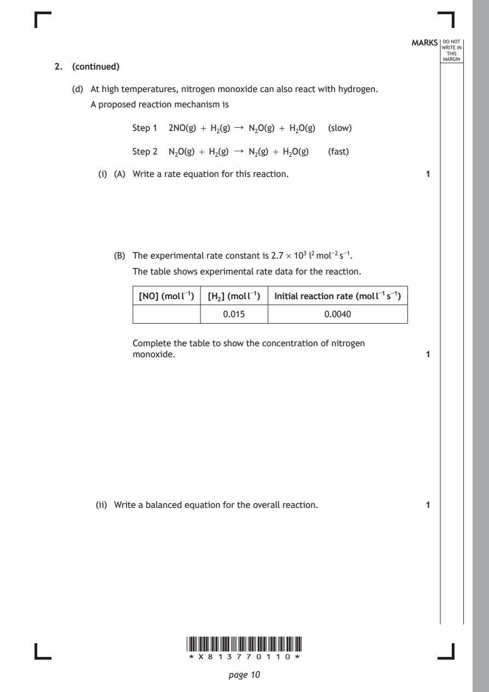
Selectable page text
MARKS _{W}^{D}_{R}^{O}_{I} _{T}^{N}OT
E IN
THIS
MARGIN
2. (continued)
(d) At high temperatures, nitrogen monoxide can also react with hydrogen.
A proposed reaction mechanism is
Step 1 2NO(g) + H₂(g) ↓ N₂O(g) + H₂O(g) (slow)
Step 2 N₂O(g) + H₂(g) ↓ N₂(g) + H₂O(g) (fast)
(i) (A) Write a rate equation for this reaction. 1
(B) The experimental rate constant is 2.7 × 10³ l² mol⁻² s⁻¹.
The table shows experimental rate data for the reaction.
[NO] (mol l⁻¹) [H₂] (mol l⁻¹) Initial reaction rate (mol l⁻¹ s⁻¹)
0.015 0.0040
Complete the table to show the concentration of nitrogen
monoxide. 1
(ii) Write a balanced equation for the overall reaction. 1
*X813770110*
page 10PDF page 11
Paper 2, Question 3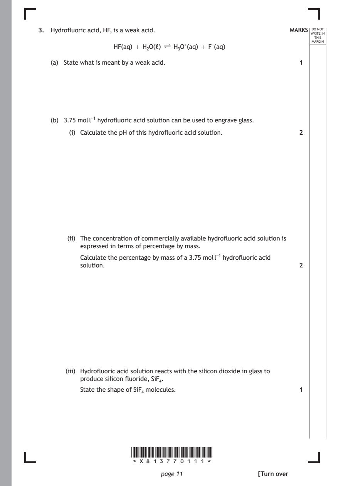
Selectable page text
3. Hydrofluoric acid, HF, is a weak acid. MARKS _{W}^{D}_{R}^{O}_{I} _{T}^{N}OT
E IN
THIS
MARGIN
HF(aq) + H₂O(ℓ) Ý H₃O⁺(aq) + F⁻(aq)
(a) State what is meant by a weak acid. 1
(b) 3.75 mol l⁻¹ hydrofluoric acid solution can be used to engrave glass.
(i) Calculate the pH of this hydrofluoric acid solution. 2
(ii) The concentration of commercially available hydrofluoric acid solution is
expressed in terms of percentage by mass.
Calculate the percentage by mass of a 3.75 mol l⁻¹ hydrofluoric acid
solution. 2
(iii) Hydrofluoric acid solution reacts with the silicon dioxide in glass to
produce silicon fluoride, SiF₄.
State the shape of SiF₄ molecules. 1
*X813770111*
page 11 [Turn overPDF page 12
Paper 2, Question 4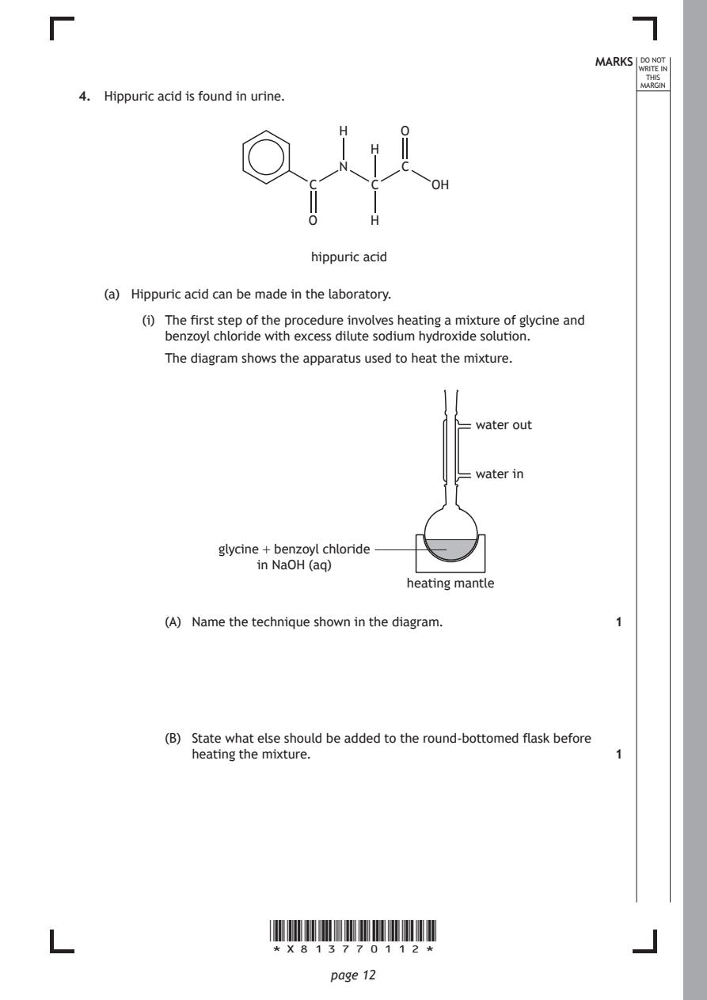
Selectable page text
MARKS _{W}^{D}_{R}^{O}_{I} _{T}^{N}OT
E IN
THIS
MARGIN
4. Hippuric acid is found in urine.
H O
H
N C
C C OH
O H
hippuric acid
(a) Hippuric acid can be made in the laboratory.
(i) The first step of the procedure involves heating a mixture of glycine and
benzoyl chloride with excess dilute sodium hydroxide solution.
The diagram shows the apparatus used to heat the mixture.
water out
water in
glycine + benzoyl chloride
in NaOH (aq)
heating mantle
(A) Name the technique shown in the diagram. 1
(B) State what else should be added to the round-bottomed flask before
heating the mixture. 1
*X813770112*
page 12PDF page 13
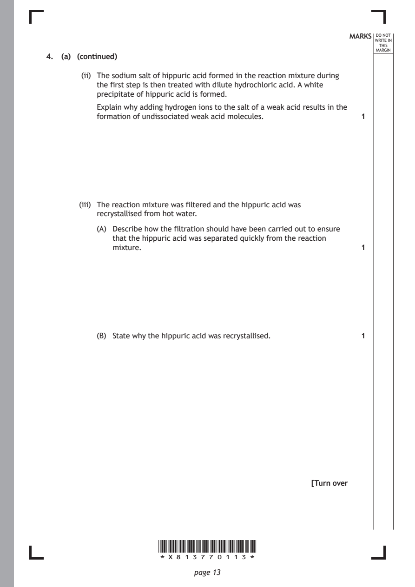
Selectable page text
MARKS _{W}^{D}_{R}^{O}_{I} _{T}^{N}OT
E IN
THIS
MARGIN
4. (a) (continued)
(ii) The sodium salt of hippuric acid formed in the reaction mixture during
the first step is then treated with dilute hydrochloric acid. A white
precipitate of hippuric acid is formed.
Explain why adding hydrogen ions to the salt of a weak acid results in the
formation of undissociated weak acid molecules. 1
(iii) The reaction mixture was filtered and the hippuric acid was
recrystallised from hot water.
(A) Describe how the filtration should have been carried out to ensure
that the hippuric acid was separated quickly from the reaction
mixture. 1
(B) State why the hippuric acid was recrystallised. 1
[Turn over
*X813770113*
page 13PDF page 14
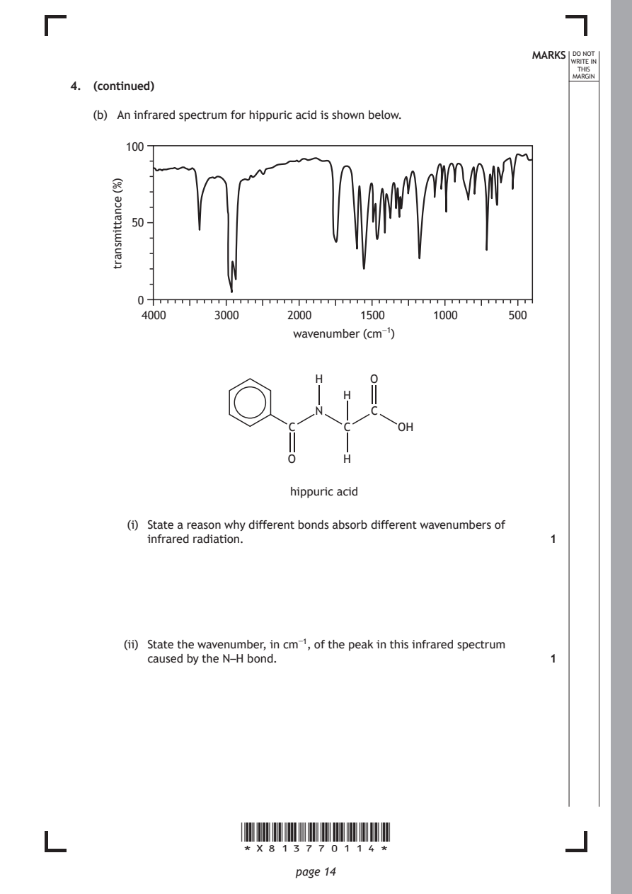
Selectable page text
MARKS _{W}^{D}_{R}^{O}_{I} _{T}^{N}OT
E IN
THIS
MARGIN
4. (continued)
(b) An infrared spectrum for hippuric acid is shown below.
*X813770114*
page 14
)%(
ecnattimsnart
100
50
0
4000 3000 2000 1500 1000 500
wavenumber (cm⁻¹)
H O
H
N C
C C OH
O H
hippuric acid
(i) State a reason why different bonds absorb different wavenumbers of
infrared radiation. 1
(ii) State the wavenumber, in cm⁻¹, of the peak in this infrared spectrum
caused by the N–H bond. 1PDF page 15
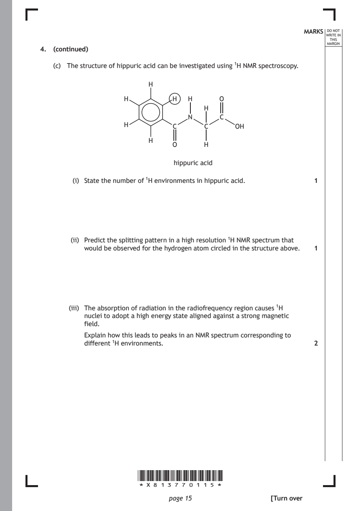
Selectable page text
MARKS _{W}^{D}_{R}^{O}_{I} _{T}^{N}OT
E IN
THIS
MARGIN
4. (continued)
(c) The structure of hippuric acid can be investigated using ¹H NMR spectroscopy.
H
H H H O
H
N C
H C C OH
H
O H
hippuric acid
(i) State the number of ¹H environments in hippuric acid. 1
(ii) Predict the splitting pattern in a high resolution ¹H NMR spectrum that
would be observed for the hydrogen atom circled in the structure above. 1
(iii) The absorption of radiation in the radiofrequency region causes ¹H
nuclei to adopt a high energy state aligned against a strong magnetic
field.
Explain how this leads to peaks in an NMR spectrum corresponding to
different ¹H environments. 2
*X813770115*
page 15 [Turn overPDF page 16
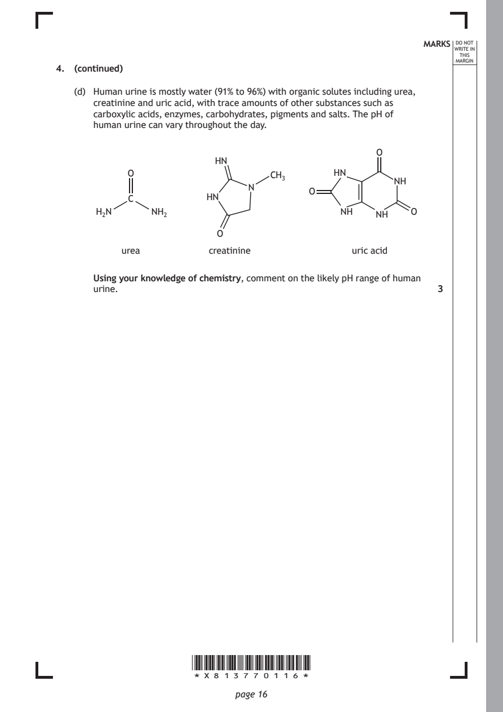
Selectable page text
MARKS _{W}^{D}_{R}^{O}_{I} _{T}^{N}OT
E IN
THIS
MARGIN
4. (continued)
(d) Human urine is mostly water (91% to 96%) with organic solutes including urea,
creatinine and uric acid, with trace amounts of other substances such as
carboxylic acids, enzymes, carbohydrates, pigments and salts. The pH of
human urine can vary throughout the day.
O
HN
O CH₃ HN
NH
N
O
C HN
H₂N NH₂ NH O
NH
O
urea creatinine uric acid
Using your knowledge of chemistry, comment on the likely pH range of human
urine. 3
*X813770116*
page 16PDF page 17
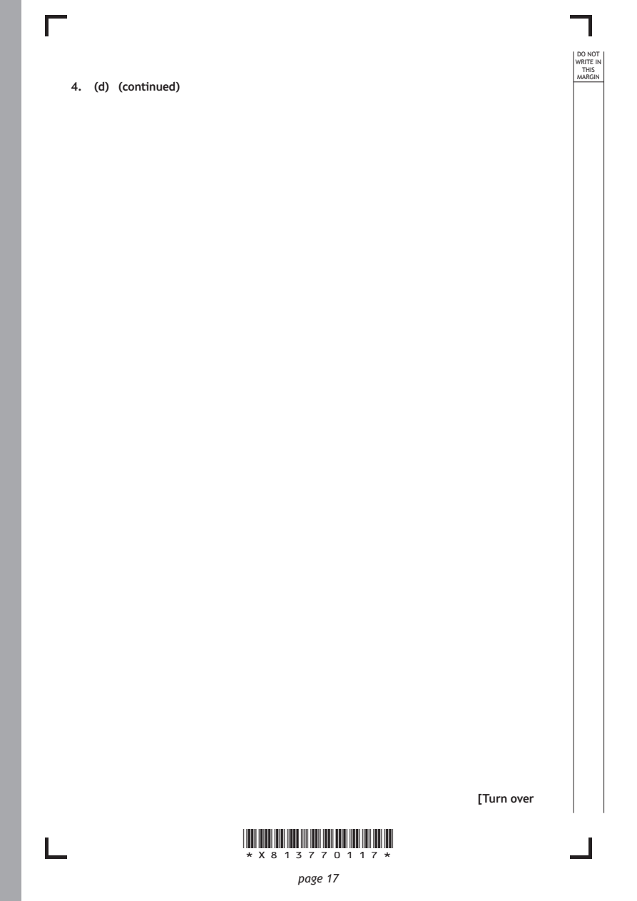
Selectable page text
DO NOT
WRITE IN
THIS
MARGIN
4. (d) (continued)
[Turn over
*X813770117*
page 17PDF page 18
Paper 2, Question 5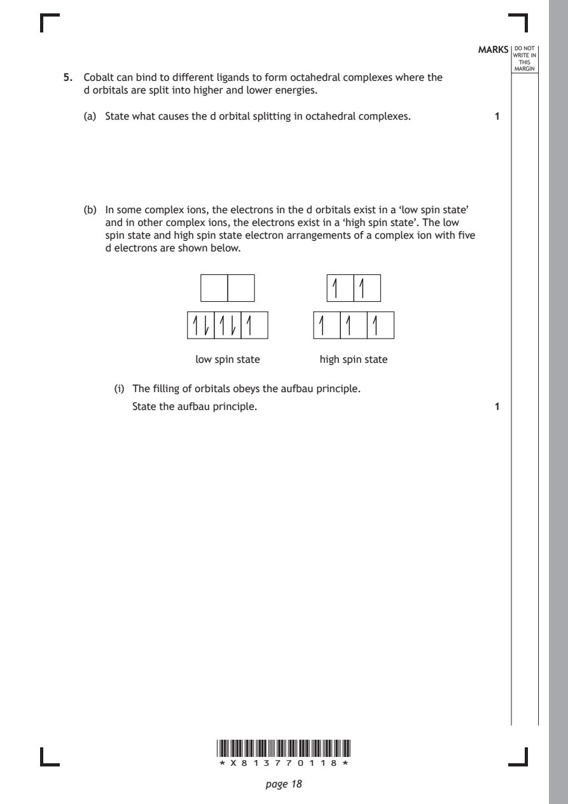
Selectable page text
MARKS _{W}^{D}_{R}^{O}_{I} _{T}^{N}OT
E IN
THIS
MARGIN
5. Cobalt can bind to different ligands to form octahedral complexes where the
d orbitals are split into higher and lower energies.
(a) State what causes the d orbital splitting in octahedral complexes. 1
(b) In some complex ions, the electrons in the d orbitals exist in a ‘low spin state’
and in other complex ions, the electrons exist in a ‘high spin state’. The low
spin state and high spin state electron arrangements of a complex ion with five
d electrons are shown below.
low spin state high spin state
(i) The filling of orbitals obeys the aufbau principle.
State the aufbau principle. 1
*X813770118*
page 18PDF page 19
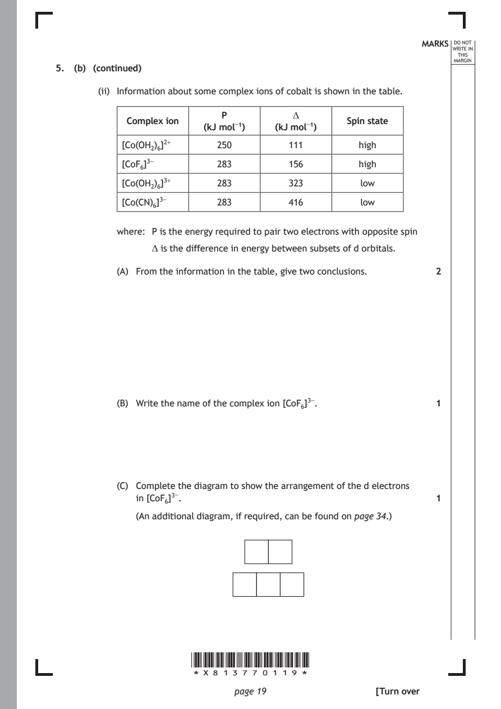
Selectable page text
MARKS _{W}^{D}_{R}^{O}_{I} _{T}^{N}OT
E IN
THIS
MARGIN
5. (b) (continued)
(ii) Information about some complex ions of cobalt is shown in the table.
P ∆
Complex ion Spin state
(kJ mol⁻¹) (kJ mol⁻¹)
[Co(OH₂)₆]²+ 250 111 high
[CoF₆]³⁻ 283 156 high
[Co(OH₂)₆]³+ 283 323 low
[Co(CN)₆]³⁻ 283 416 low
where: P is the energy required to pair two electrons with opposite spin
∆ is the difference in energy between subsets of d orbitals.
(A) From the information in the table, give two conclusions. 2
(B) Write the name of the complex ion [CoF₆]³⁻. 1
(C) Complete the diagram to show the arrangement of the d electrons
in [CoF₆]³⁻. 1
(An additional diagram, if required, can be found on page 34.)
*X813770119*
page 19 [Turn overPDF page 20
Paper 2, Question 6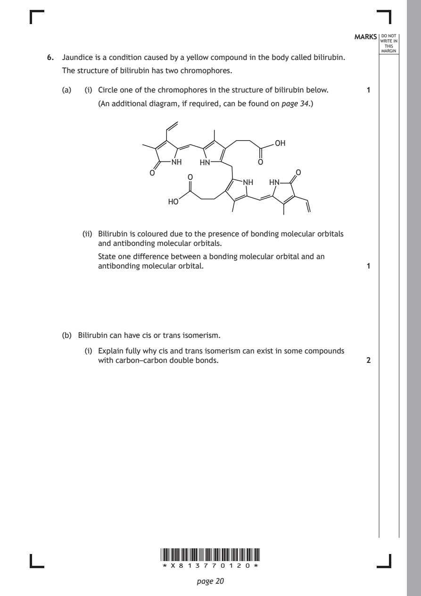
Selectable page text
MARKS _{W}^{D}_{R}^{O}_{I} _{T}^{N}OT
E IN
THIS
MARGIN
6. Jaundice is a condition caused by a yellow compound in the body called bilirubin.
The structure of bilirubin has two chromophores.
(a) (i) Circle one of the chromophores in the structure of bilirubin below. 1
(An additional diagram, if required, can be found on page 34.)
OH
NH HN O
O O
O
NH HN
HO
(ii) Bilirubin is coloured due to the presence of bonding molecular orbitals
and antibonding molecular orbitals.
State one difference between a bonding molecular orbital and an
antibonding molecular orbital. 1
(b) Bilirubin can have cis or trans isomerism.
(i) Explain fully why cis and trans isomerism can exist in some compounds
with carbon–carbon double bonds. 2
*X813770120*
page 20PDF page 21
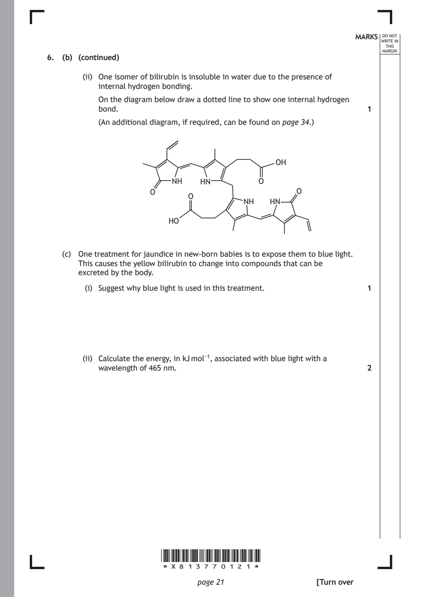
Selectable page text
MARKS _{W}^{D}_{R}^{O}_{I} _{T}^{N}OT
E IN
THIS
MARGIN
6. (b) (continued)
(ii) One isomer of bilirubin is insoluble in water due to the presence of
internal hydrogen bonding.
On the diagram below draw a dotted line to show one internal hydrogen
bond. 1
(An additional diagram, if required, can be found on page 34.)
OH
NH HN O
O O
O
NH HN
HO
(c) One treatment for jaundice in new-born babies is to expose them to blue light.
This causes the yellow bilirubin to change into compounds that can be
excreted by the body.
(i) Suggest why blue light is used in this treatment. 1
(ii) Calculate the energy, in kJ mol⁻¹, associated with blue light with a
wavelength of 465 nm. 2
*X813770121*
page 21 [Turn overPDF page 22
Paper 2, Question 7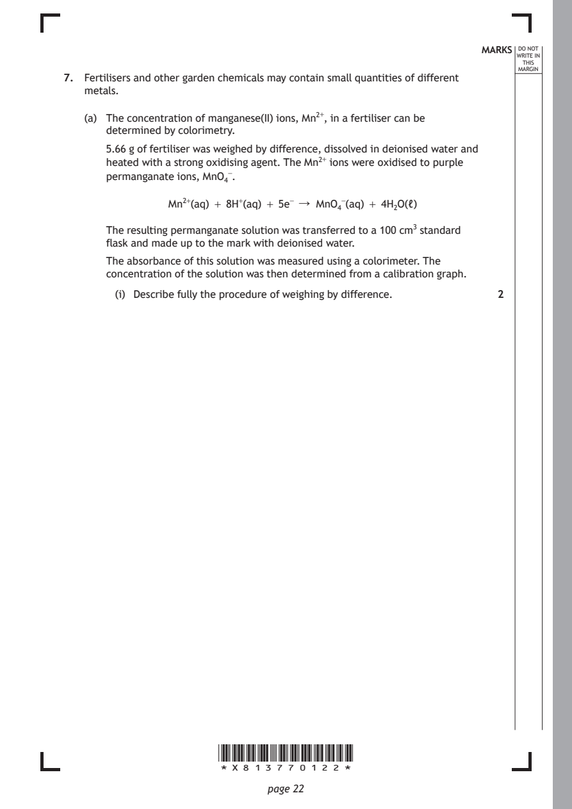
Selectable page text
MARKS _{W}^{D}_{R}^{O}_{I} _{T}^{N}OT
E IN
THIS
MARGIN
7. Fertilisers and other garden chemicals may contain small quantities of different
metals.
(a) The concentration of manganese(II) ions, Mn²⁺, in a fertiliser can be
determined by colorimetry.
5.66 g of fertiliser was weighed by difference, dissolved in deionised water and
heated with a strong oxidising agent. The Mn²⁺ ions were oxidised to purple
permanganate ions, MnO₄⁻.
Mn²⁺(aq) + 8H⁺(aq) + 5e⁻ ↓ MnO₄⁻(aq) + 4H₂O(ℓ)
The resulting permanganate solution was transferred to a 100 cm³ standard
flask and made up to the mark with deionised water.
The absorbance of this solution was measured using a colorimeter. The
concentration of the solution was then determined from a calibration graph.
(i) Describe fully the procedure of weighing by difference. 2
*X813770122*
page 22PDF page 23
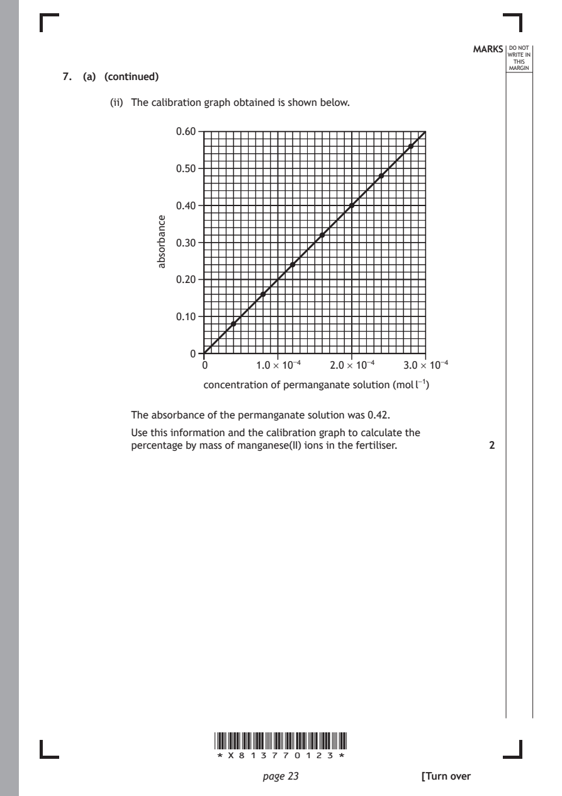
Selectable page text
MARKS _{W}^{D}_{R}^{O}_{I} _{T}^{N}OT
E IN
THIS
MARGIN
7. (a) (continued)
(ii) The calibration graph obtained is shown below.
*X813770123*
page 23
ecnabrosba
0.60
0.50
0.40
0.30
0.20
0.10
0
0 1.0 × 10⁻⁴ 2.0 × 10⁻⁴ 3.0 × 10⁻⁴
concentration of permanganate solution (mol l⁻¹)
The absorbance of the permanganate solution was 0.42.
Use this information and the calibration graph to calculate the
percentage by mass of manganese(II) ions in the fertiliser. 2
[Turn overPDF page 24
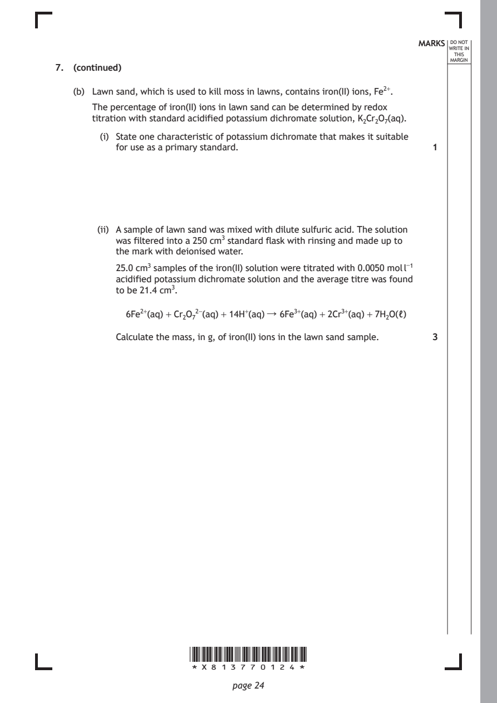
Selectable page text
MARKS _{W}^{D}_{R}^{O}_{I} _{T}^{N}OT
E IN
THIS
MARGIN
7. (continued)
(b) Lawn sand, which is used to kill moss in lawns, contains iron(II) ions, Fe²⁺.
The percentage of iron(II) ions in lawn sand can be determined by redox
titration with standard acidified potassium dichromate solution, K₂Cr₂O₇(aq).
(i) State one characteristic of potassium dichromate that makes it suitable
for use as a primary standard. 1
(ii) A sample of lawn sand was mixed with dilute sulfuric acid. The solution
was filtered into a 250 cm³ standard flask with rinsing and made up to
the mark with deionised water.
25.0 cm³ samples of the iron(II) solution were titrated with 0.0050 mol l⁻¹
acidified potassium dichromate solution and the average titre was found
to be 21.4 cm³.
6Fe²⁺(aq) + Cr₂O₇²⁻(aq) + 14H⁺(aq) ↓ 6Fe³⁺(aq) + 2Cr³⁺(aq) + 7H₂O(ℓ)
Calculate the mass, in g, of iron(II) ions in the lawn sand sample. 3
*X813770124*
page 24PDF page 25
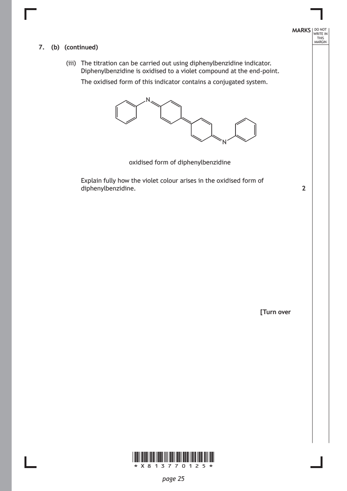
Selectable page text
MARKS _{W}^{D}_{R}^{O}_{I} _{T}^{N}OT
E IN
THIS
MARGIN
7. (b) (continued)
(iii) The titration can be carried out using diphenylbenzidine indicator.
Diphenylbenzidine is oxidised to a violet compound at the end-point.
The oxidised form of this indicator contains a conjugated system.
N
N
oxidised form of diphenylbenzidine
Explain fully how the violet colour arises in the oxidised form of
diphenylbenzidine. 2
[Turn over
*X813770125*
page 25PDF page 26
Paper 2, Question 8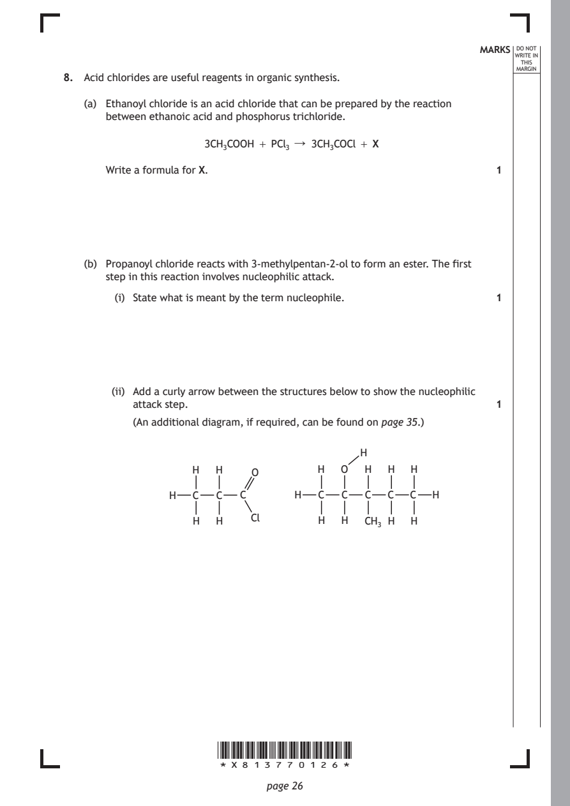
Selectable page text
MARKS _{W}^{D}_{R}^{O}_{I} _{T}^{N}OT
E IN
THIS
MARGIN
8. Acid chlorides are useful reagents in organic synthesis.
(a) Ethanoyl chloride is an acid chloride that can be prepared by the reaction
between ethanoic acid and phosphorus trichloride.
3CH₃COOH + PCl₃ ↓ 3CH₃COCl + X
Write a formula for X. 1
(b) Propanoyl chloride reacts with 3-methylpentan-2-ol to form an ester. The first
step in this reaction involves nucleophilic attack.
(i) State what is meant by the term nucleophile. 1
(ii) Add a curly arrow between the structures below to show the nucleophilic
attack step. 1
(An additional diagram, if required, can be found on page 35.)
H
H H O H O H H H
H C C C H C C C C C H
H H Cl H H CH₃ H H
*X813770126*
page 26PDF page 27
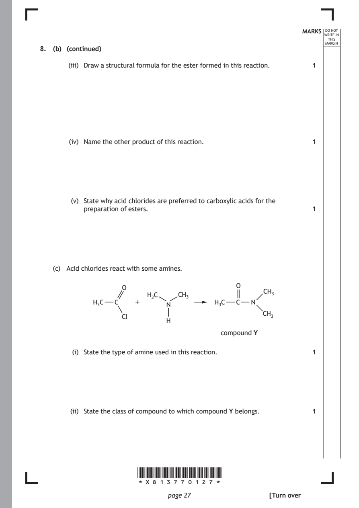
Selectable page text
MARKS _{W}^{D}_{R}^{O}_{I} _{T}^{N}OT
E IN
THIS
MARGIN
8. (b) (continued)
(iii) Draw a structural formula for the ester formed in this reaction. 1
(iv) Name the other product of this reaction. 1
(v) State why acid chlorides are preferred to carboxylic acids for the
preparation of esters. 1
(c) Acid chlorides react with some amines.
O
O
CH₃
H₃C CH₃
H₃C C + H₃C C N
N
CH₃
Cl
H
compound Y
(i) State the type of amine used in this reaction. 1
(ii) State the class of compound to which compound Y belongs. 1
*X813770127*
page 27 [Turn overPDF page 28
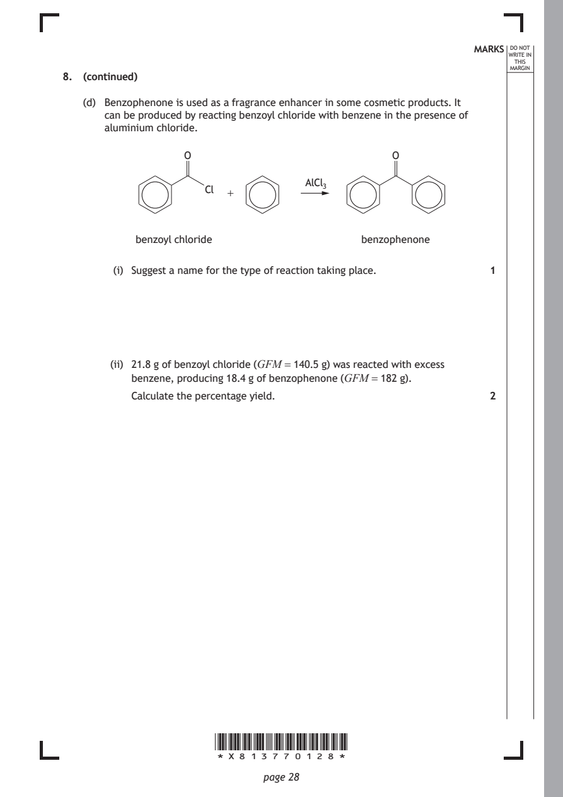
Selectable page text
MARKS _{W}^{D}_{R}^{O}_{I} _{T}^{N}OT
E IN
THIS
MARGIN
8. (continued)
(d) Benzophenone is used as a fragrance enhancer in some cosmetic products. It
can be produced by reacting benzoyl chloride with benzene in the presence of
aluminium chloride.
O O
AlCl₃
Cl +
benzoyl chloride benzophenone
(i) Suggest a name for the type of reaction taking place. 1
(ii) 21.8 g of benzoyl chloride (GFM = 140.5 g) was reacted with excess
benzene, producing 18.4 g of benzophenone (GFM = 182 g).
Calculate the percentage yield. 2
*X813770128*
page 28PDF page 29
Paper 2, Question 9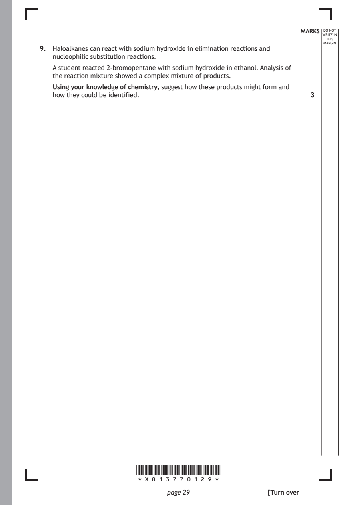
Selectable page text
MARKS _{W}^{D}_{R}^{O}_{I} _{T}^{N}OT
E IN
THIS
MARGIN
9. Haloalkanes can react with sodium hydroxide in elimination reactions and
nucleophilic substitution reactions.
A student reacted 2-bromopentane with sodium hydroxide in ethanol. Analysis of
the reaction mixture showed a complex mixture of products.
Using your knowledge of chemistry, suggest how these products might form and
how they could be identified. 3
*X813770129*
page 29 [Turn overPDF page 30
Paper 2, Question 10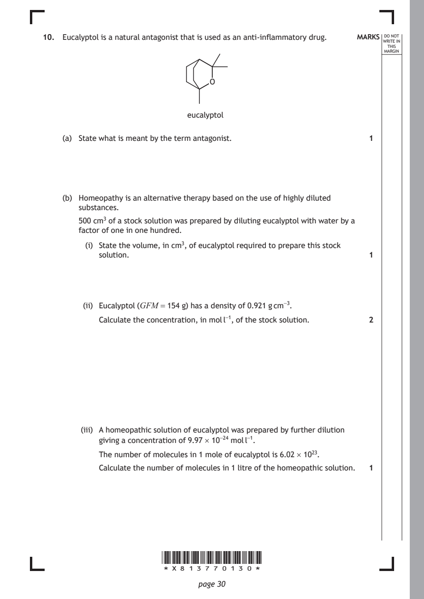
Selectable page text
10. Eucalyptol is a natural antagonist that is used as an anti-inflammatory drug. MARKS _{W}^{D}_{R}^{O}_{I} _{T}^{N}OT
E IN
THIS
MARGIN
O
eucalyptol
(a) State what is meant by the term antagonist. 1
(b) Homeopathy is an alternative therapy based on the use of highly diluted
substances.
500 cm³ of a stock solution was prepared by diluting eucalyptol with water by a
factor of one in one hundred.
(i) State the volume, in cm³, of eucalyptol required to prepare this stock
solution. 1
(ii) Eucalyptol (GFM = 154 g) has a density of 0.921 g cm⁻³.
Calculate the concentration, in mol l⁻¹, of the stock solution. 2
(iii) A homeopathic solution of eucalyptol was prepared by further dilution
giving a concentration of 9.97 × 10⁻²⁴ mol l⁻¹.
The number of molecules in 1 mole of eucalyptol is 6.02 × 10²³.
Calculate the number of molecules in 1 litre of the homeopathic solution. 1
*X813770130*
page 30PDF page 31
Paper 2, Question 11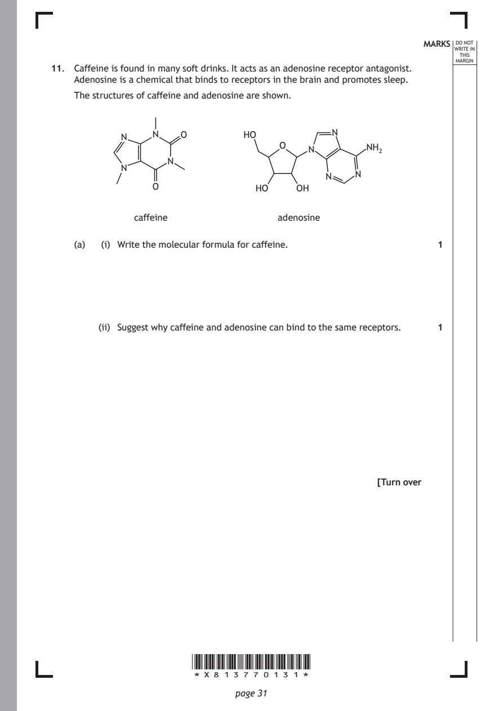
Selectable page text
MARKS _{W}^{D}_{R}^{O}_{I} _{T}^{N}OT
E IN
THIS
MARGIN
11. Caffeine is found in many soft drinks. It acts as an adenosine receptor antagonist.
Adenosine is a chemical that binds to receptors in the brain and promotes sleep.
The structures of caffeine and adenosine are shown.
N N O HO N
O N NH₂
N
N
N N
O HO OH
caffeine adenosine
(a) (i) Write the molecular formula for caffeine. 1
(ii) Suggest why caffeine and adenosine can bind to the same receptors. 1
[Turn over
*X813770131*
page 31PDF page 32
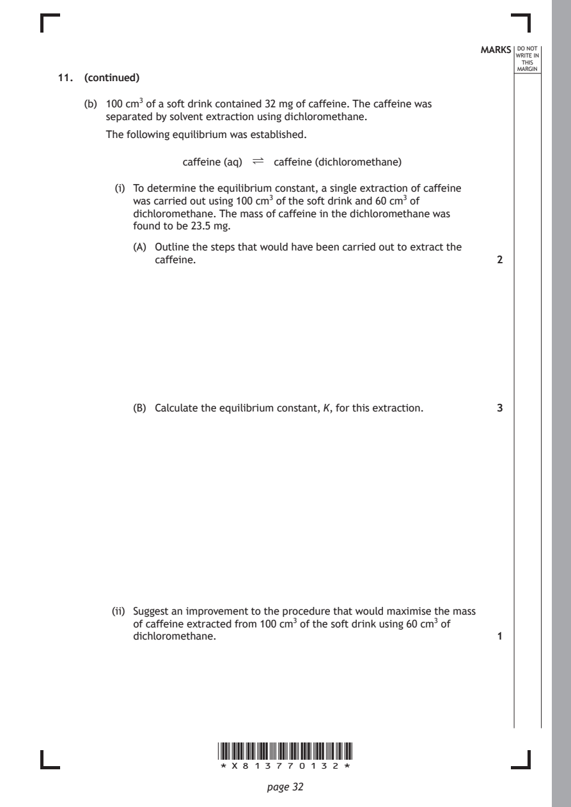
Selectable page text
MARKS _{W}^{D}_{R}^{O}_{I} _{T}^{N}OT
E IN
THIS
MARGIN
11. (continued)
(b) 100 cm³ of a soft drink contained 32 mg of caffeine. The caffeine was
separated by solvent extraction using dichloromethane.
The following equilibrium was established.
caffeine (aq) Ý caffeine (dichloromethane)
(i) To determine the equilibrium constant, a single extraction of caffeine
was carried out using 100 cm³ of the soft drink and 60 cm³ of
dichloromethane. The mass of caffeine in the dichloromethane was
found to be 23.5 mg.
(A) Outline the steps that would have been carried out to extract the
caffeine. 2
(B) Calculate the equilibrium constant, K, for this extraction. 3
(ii) Suggest an improvement to the procedure that would maximise the mass
of caffeine extracted from 100 cm³ of the soft drink using 60 cm³ of
dichloromethane. 1
*X813770132*
page 32PDF page 33
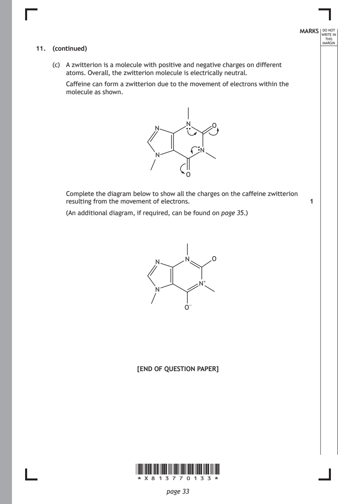
Selectable page text
MARKS _{W}^{D}_{R}^{O}_{I} _{T}^{N}OT
E IN
THIS
MARGIN
11. (continued)
(c) A zwitterion is a molecule with positive and negative charges on different
atoms. Overall, the zwitterion molecule is electrically neutral.
Caffeine can form a zwitterion due to the movement of electrons within the
molecule as shown.
N O
N
N
N
O
Complete the diagram below to show all the charges on the caffeine zwitterion
resulting from the movement of electrons. 1
(An additional diagram, if required, can be found on page 35.)
N O
N
N⁺
N
O⁻
[END OF QUESTION PAPER]
*X813770133*
page 33PDF page 34
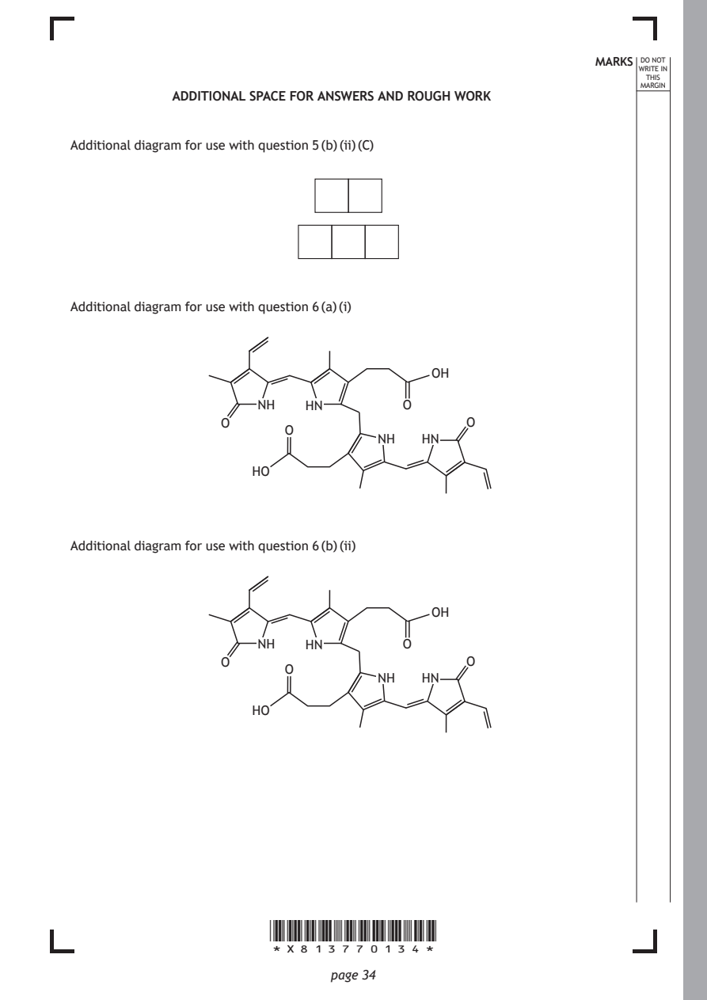
Selectable page text
MARKS _{W}^{D}_{R}^{O}_{I} _{T}^{N}OT
E IN
THIS
MARGIN
ADDITIONAL SPACE FOR ANSWERS AND ROUGH WORK
Additional diagram for use with question 5 (b) (ii) (C)
Additional diagram for use with question 6 (a) (i)
OH
NH HN O
O O
O
NH HN
HO
Additional diagram for use with question 6 (b) (ii)
OH
NH HN O
O O
O
NH HN
HO
*X813770134*
page 34PDF page 35
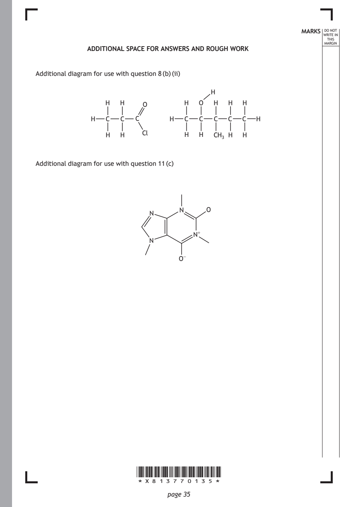
Selectable page text
MARKS _{W}^{D}_{R}^{O}_{I} _{T}^{N}OT
E IN
THIS
MARGIN
ADDITIONAL SPACE FOR ANSWERS AND ROUGH WORK
Additional diagram for use with question 8 (b) (ii)
H
H H O H O H H H
H C C C H C C C C C H
H H Cl H H CH₃ H H
Additional diagram for use with question 11 (c)
N O
N
N⁺
N
O⁻
*X813770135*
page 35PDF page 36

Selectable page text
MARKS _{W}^{D}_{R}^{O}_{I} _{T}^{N}OT
E IN
THIS
MARGIN
ADDITIONAL SPACE FOR ANSWERS AND ROUGH WORK
*X813770136*
page 36PDF page 37
Selectable page text
MARKS _{W}^{D}_{R}^{O}_{I} _{T}^{N}OT
E IN
THIS
MARGIN
ADDITIONAL SPACE FOR ANSWERS AND ROUGH WORK
*X813770137*
page 37PDF page 38
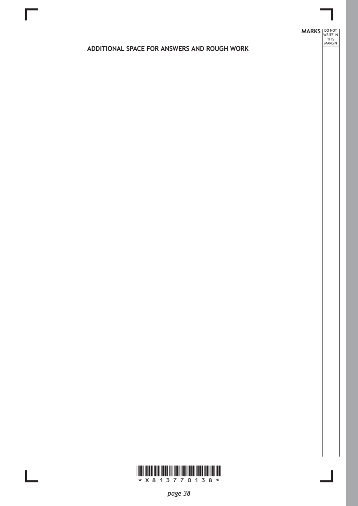
Selectable page text
MARKS _{W}^{D}_{R}^{O}_{I} _{T}^{N}OT
E IN
THIS
MARGIN
ADDITIONAL SPACE FOR ANSWERS AND ROUGH WORK
*X813770138*
page 38PDF page 39
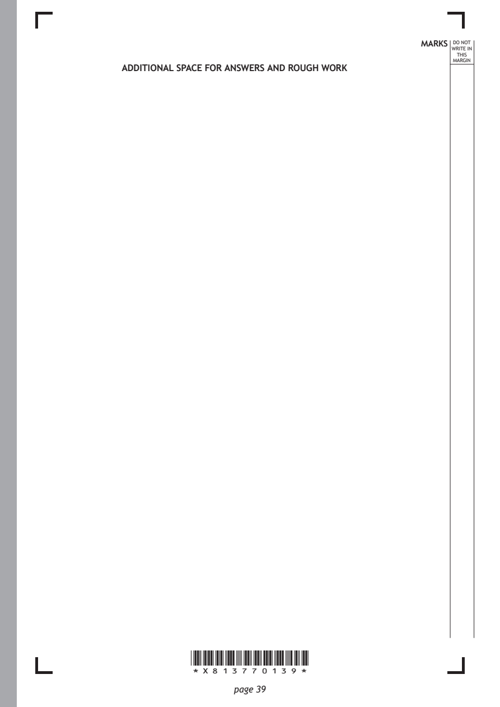
Selectable page text
MARKS _{W}^{D}_{R}^{O}_{I} _{T}^{N}OT
E IN
THIS
MARGIN
ADDITIONAL SPACE FOR ANSWERS AND ROUGH WORK
*X813770139*
page 39PDF page 40

Selectable page text
[BLANK PAGE]
DO NOT WRITE ON THIS PAGE
*X813770140*
page 40